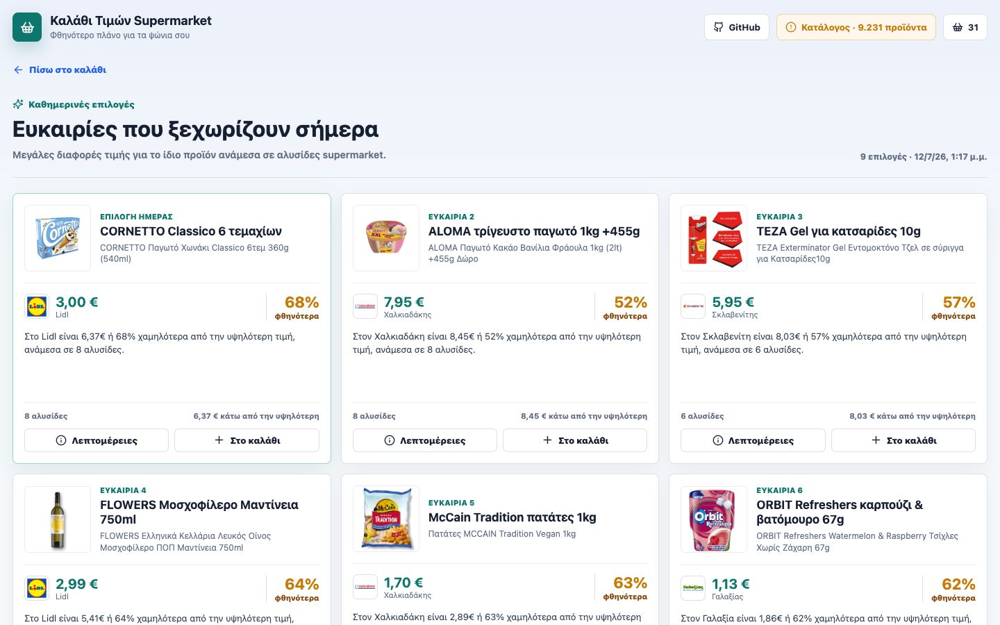
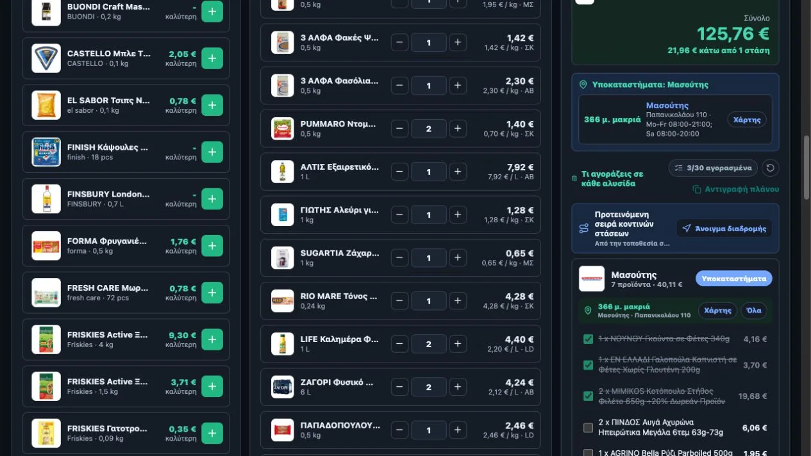

I build product apps, local-first utilities, agentic workflows, and
self-hosted infrastructure. The common standard is simple: expose
the state, plan for recovery, and prove the result.
04Outcomes verifiedThe user-visible result is the proof
Dependability is not a visual claim. It is what the system does after the first plan fails.
Scope
Product to infrastructure
Surfaces
Web, native, edge, self-hosted
Default
Evidence before action
Selected work / case notes
Systems documented by constraint and outcome.
The work spans consumer products, native operations, and private edge
systems. Each case is framed around the condition that could make it
unreliable, and the engineering response to that condition.
Case 01 / Public product
React / catalogue pipeline / route planning
Live product
agenticspiros.com / basket


Whole-trip price comparison
A price tool that accounts for the whole trip.
The cheapest item is not always the cheapest shopping plan.
The product compares complete baskets across one-to-four stops,
factors in nearby chains and route practicality, and keeps the
catalogue timestamp visible. A scheduled snapshot path preserves
useful behavior when direct upstream requests are unavailable.
A reliable system is not one that never fails. It is one that exposes
the failure, contains the damage, preserves a recovery path, and makes
the final state easy to verify.
01
Diagnose the actual state.
Start with probes, logs, page state, and the user-visible symptom before changing configuration.
Observe / reconcile / decide
02
Bound the risky action.
Keep permissions narrow and irreversible transitions explicit enough for a person to inspect.
Guard / confirm / execute
03
Make recovery routine.
Snapshots, receipts, local history, and bounded retries turn failure into an ordinary operating state.
Record / retry / restore
04
Verify at the surface.
A successful command is only an intermediate event. The product or machine state is the result.
Probe / compare / close
The professional standard
Leave the system easier to understand, safer to operate, and less
dependent on memory than it was before.
Open systems index
A broader record of shipped work.
Selected public repositories across native apps, local-first tools,
private media, agentic automation, and earlier research tooling.
01 / Learning app
Italian Coach
Adaptive, local-first Italian practice with mistake review and optional self-hosted sync.